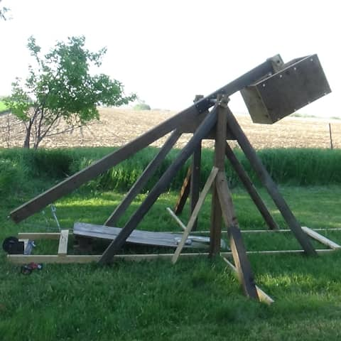

Trebuchet 1
In 2017 I had a spontaneous desire to build a trebuchet, and enough free time to do it. After sketching a rough set of plans I set to work. Using lumber we had on hand I was able to make a 7' tall frame and a 14' arm. The weight box is filled with four layers of red brick. I estimate that it weighed around 300-400lb. While the frame tended to wobble when firing, it was more than capable of dealing with that kind of stress.
After building it I realized the weight box was to heavy for me to pull back the arm despite the extra leverage. Instead, I used a manual winch from a retired grain auger. I found out that I could chuck up my drill onto the input shaft and use it instead of manually cranking. Once the arm was pulled back I would treat the machine like a loaded gun. Always considering what ways it could try to kill me.
Once the sling malfunctioned and released a brick straight up into the air. It flew above the height of our maple trees and then landed into the ground producing a two inch divot.
While it was fun being able to throw heavy things I was never happy with the efficiency of this machine. Given the size of it, I was hoping for distances further than 200' but the machine was to big for me to be able to tweak it. Eventually, I took this machine apart and built a smaller trebuchet.